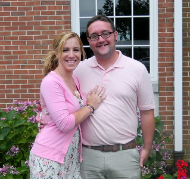
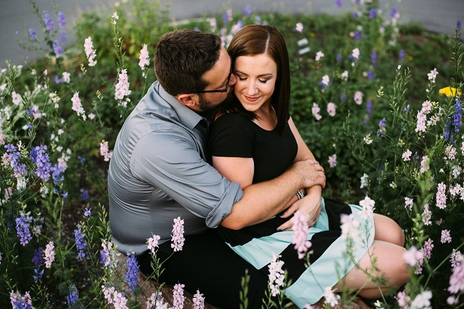

| Our Story |
|  |
| While attending IPFW, Allison and Dustin met because of his department secretary who also happened to be the mother of one of Allison's best friends. Lisa Davenport (the secretary/mom) worked her magic and convinced Allison and Dustin (after much resistance) to find each other on Facebook. After Dustin accepted the friend request in February, 2012, Lisa continued to question him if the two had talked. Finally after he finished classes for the day, Dustin sent a message to Allison asking about herself and her connection to Lisa. The two chatted for a while on Facebook and the rest is history... |
|  |
| Our Engagement |
|
On May 4th, 2015 Allison was having a stress-filled day. Dustin had come out to her place in Virginia to help her work on her Thesis proposal. After Allison had gone to campus and successfully proposed her thesis, the two went out to celebrate. Little did she know there was going to be more to celebrate than her thesis! Allison picked the Cheesecake Factory so that she could get her favorite glam burger (the one with fried macaroni and cheese on top-how romantic). After a waiter change mid-meal, the two both enjoyed their large and unhealthy meal. After dinner was over, Dustin attempted to get Allison to walk around the mall, but she was not having it. She was wearing shoes that were too tight and was running on left over adrenaline from the thesis proposal. All-in-all she was ready to go home and go to bed. Dustin was not about to let that happen. His plan to keep her in the mall failed miserably and they ended up walking out to her car to go back to her place.
Instead of starting the car and heading back, he asked her 4 simple questions.
She looked at him with a weird look as if her face was saying " What the hell are you talking about". And then he said " Well I have another one of those types of questions.... Will you marry me?". Then with as much grace as possible, he reached into his side pocket of his khaki shorts and tried to grab the ring. He normally does not button them, but today he made an exception because of the ring. How embarassing was it to not get the ring out! However, with all of the fumbling about, messed up plans, and shoes that were too tight.... She said YES! |